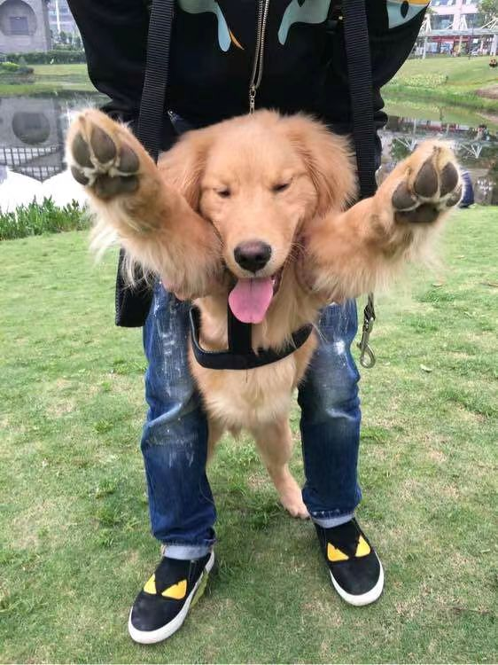

Milo, the Inquisitive Meerkat
Allow me to introduce you to Milo, the embodiment of curiosity in the diminutive and charming form of a meerkat. With his upright posture and an insatiable spirit of adventure, Milo never ceases to captivate those around him.
Milo is a small and slender meerkat, sporting sandy-brown fur adorned with distinctive dark stripes along his back. His two bright, inquisitive eyes seem to absorb the world with boundless wonder.
What truly sets Milo apart is his unquenchable thirst for exploration. Milo's days are filled with digging and burrowing, creating intricate tunnels in his enclosure that rival any archaeological excavation. His underground domain is a testament to his resourcefulness and determination.
Milo is also a social dynamo, always ready for a game of hide-and-seek with his human companions. His ability to stand upright and scan the surroundings with unwavering attention is a sight to behold. Milo's playful antics and friendly demeanor make him the life of the party among his fellow meerkats.
Photo Gallery
Buck, the Curious Young Border Collie
Meet Buck, the embodiment of youthful curiosity and boundless energy in the form of a Border Collie. With a keen intellect and an insatiable appetite for exploration, Buck is a captivating canine that never ceases to amaze.
Buck is a young and vibrant Border Collie, with a sleek black and white coat that complements his agile frame. His alert, expressive eyes reflect a world of wonder and intelligence, always eager to take in new experiences.
What truly sets Buck apart is his insatiable thirst for adventure. His days are filled with play, exercise, and discovery. Buck loves to chase after balls with unwavering determination, showcasing his agility and impressive herding instincts even at a young age.
Buck is also a quick learner and thrives on mental challenges. His problem-solving skills are impressive, and he relishes any opportunity to engage in interactive games or training sessions. Whether it's mastering new tricks or exploring the great outdoors, Buck is always up for an adventure.
Photo Gallery
Max, the Playful Golden Retriever
Meet Max, the embodiment of playfulness and boundless enthusiasm in the form of a Golden Retriever. With a perpetually wagging tail and an irresistible charm, Max is a canine companion that brings joy wherever they go.
Max is a shining example of a Golden Retriever, with a beautiful golden coat that glistens in the sunlight. Their expressive brown eyes radiate warmth and affection, capturing the hearts of everyone they meet.
What sets Max apart is their unwavering love for playtime. Their days are filled with fetching balls, chasing after frisbees, and splashing in the water with unbridled enthusiasm. Max's boundless energy and friendly nature make them the perfect playmate for both humans and other dogs.
Max is not just a bundle of energy; they are also incredibly affectionate and loyal. Their favorite place in the world is right by your side, ready to shower you with love and affection. Max's gentle disposition and warm heart make them a cherished member of any family.
Photo Gallery
Sylvia, the Majestic Silver Maine Coon
Meet Sylvia, the epitome of feline majesty embodied in a Silver Maine Coon. With her striking appearance and an air of regal charm, Sylvia is a graceful companion that captivates those who cross her path.
Sylvia's coat is a shimmering silver, reflecting the light with a touch of elegance. Her striking green eyes hold a hint of mystery, making her a captivating presence in any room.
But what truly sets Sylvia apart is her graceful demeanor. She moves with the poise of a queen, making every step seem like a dance. Her calm and collected nature is a testament to her inner serenity.
Sylvia is not just about appearances; she is also incredibly affectionate and loyal. Her favorite place is curled up next to you, providing comfort and warmth. Sylvia's gentle disposition and regal aura make her a cherished member of any household.
Photo Gallery
Whiskers, the Playful Tabby Kitten
Meet Whiskers, a whirlwind of playful energy wrapped up in a tiny tabby kitten. With boundless curiosity and a mischievous twinkle in their eyes, Whiskers is a pint-sized bundle of joy that never fails to bring smiles to those around them.
Whiskers' fur is adorned with the classic tabby stripes, giving them an endearing and distinctive appearance. Their big, expressive eyes are windows to a world filled with wonder, always eager to explore and learn.
But what truly sets Whiskers apart is their insatiable love for playtime. Their days are a non-stop adventure of pouncing on feather toys, chasing after laser pointers, and engaging in spirited games of hide-and-seek. Whiskers' boundless energy and endless enthusiasm make them the life of the party, both for humans and fellow feline friends.
Whiskers is not just a playful kitten; they are also incredibly affectionate. Their favorite place is nestled in your lap, purring contentedly as they soak up your love and attention. Whiskers' gentle nature and playful spirit make them an adored member of any household.